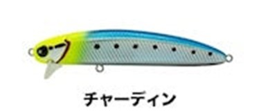
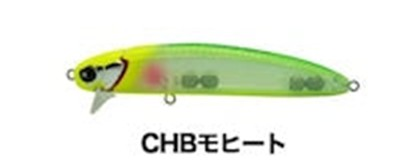
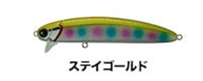
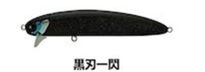

ユニフォース130F
（UNIFORCE130F）
ユニフォース130F（UNIFORCE130F）はLEGARE（レガーレ）のフローティングミノーです。
2つのヘッドを付け替えて、表層と水面下を1本で攻略。主なターゲットはシーバスです。
業界初の「MAG HEAD」を搭載し、2つのヘッドで異なるレンジとアクションを使い分けるUNIFORCEシリーズの第2弾。ハイシーズンのコノシロやイナッコなど大型のベイトに対応するため130mmに大型化し、ランカーにも対応したリングとフックを装備しています。

画像出典:LEGARE公式HP
スペック
- メーカー
- LEGARE（レガーレ）
- タイプ
- フローティング
- 全長
- 130mm
- 重量
- ウェイクヘッド39g／レードルヘッド39.5g
- アクション・レンジ
- ウェイクヘッド：ウェイク（0〜10cm）／レードルヘッド：ロール（40〜80cm）
- フック
- #2
- リング
- #4
- 搭載システム
- MAG HEAD（特許第7075690号）
- 価格
- 3,500円（公式オンラインストア価格）
▼今すぐチェック

ユニフォース130Fの特徴
磁石で付け替える「MAG HEAD」で、1本で2つのアクションとレンジ
-
ヘッドを付け替えられるMAG HEAD
ヘッドとボディに高磁力のネオジム磁石を内蔵し、取り外せるヘッドを素早く確実に固定する技術（特許第7075690号）。ヘッドを替えるだけで、1つのルアーで2つのアクションを出せる。
-
ウェイクヘッドは表層の引き波
強すぎないウェイクアクションで、ルアーの後ろから引き波を出す。ロッドを立てれば水面を引き波で、寝かせれば水面下を同じアクションで動かせる。
-
レードルヘッドは水面下のロール
ローリング主体のアクションで、流速やリトリーブの変化でふらつく「食わせの間」を出す。水面で反応しない時に、水面下40〜80cmを攻められる。
ユニフォース130Fの使い方
どちらのヘッドも、基本はただ巻きです。ただ巻きでやや控えめのアクションになり、食わせの間を自動で作ってくれます。
まずはウェイクヘッドで水面を引き波で引き、反応がなければレードルヘッドに付け替えて水面下を通す、という順番が分かりやすい使い方です。
ユニフォース130Fの得意な状況
コノシロやイナッコなど大型のベイトを食べているシーバスを狙う時が得意です。
大きなアクションのルアーに反応しない、ナチュラルな動きにだけ反応するシーバスにも向いています。
ワンポイント
ヘッドを替えるだけでレンジとアクションが変わるので、ルアーを結び替えずに攻め方を変えられます。ランカー狙いの釣行で、ボックスに入れておきたい1本です。
UNIFORCEシリーズのサイズの使い分け
| モデル | 全長 | 特徴 |
|---|---|---|
| UNIFORCE100F | 100mm | シリーズ第1弾。MAG HEADで2つのヘッドを使い分ける基本サイズ |
| UNIFORCE130F（この記事） | 130mm | コノシロ・イナッコなど大型ベイト向けに大型化。ランカー対応のフック・リング |
※数値は公式ページより。
オススメカラー
ユニフォース130Fは全10色。そのうち4色を紹介します（画像は公式のカラーチャートより）。

チャーディンまず1つ選ぶならこの色。チャートのヘッドにイワシ柄で、視認性とナチュラルさを両立。

CHBモヒートチャートバックで視認性が高い。濁りや夜にも。

ステイゴールド透け感のあるゴールド系。濁りの日や朝夕に。

黒刃一閃黒系のシルエットカラー。夜や逆光でシルエットを見せたい時に。
画像出典:LEGARE公式HP
ユニフォース130Fに似ているルアー
-
 ユニフォース100F
レガーレ
詳細はこちら＞
ユニフォース100F
レガーレ
詳細はこちら＞
同じMAG HEADを搭載したシリーズ第1弾。100mmで使いやすい基本サイズ。
-
 ヴァダム125F
レガーレ
詳細はこちら＞
ヴァダム125F
レガーレ
詳細はこちら＞
同じレガーレのシャローランナー。大型ベイトのシーズンにあわせて。
-
 カゲロウ124F
メガバス
詳細はこちら＞
カゲロウ124F
メガバス
詳細はこちら＞
表層を引き波で引ける定番のフローティングミノー。